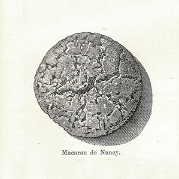
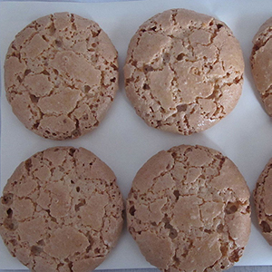
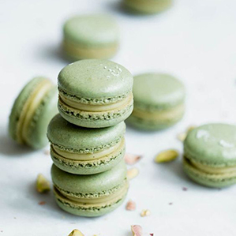

Macarons have been produced in the Venetian monasteries since the 8th century A.D. During the Renaissance, French queen Catherine de' Medici's Italian pastry chefs made them when she brought them with her to France in 1533 upon marrying Henry II of France. Macaron was taken to France.
the macaron was created in 1791 in a convent near Cormery. In 1792, macarons began to gain fame when two Carmelite nuns, seeking asylum in Nancy during the French Revolution, baked and sold the macaron cookies in order to pay for their housing. These nuns became known as the "Macaron Sisters".
It was not until the 1930s that macarons began to be served two-by-two with the addition of jams, liqueurs, and spices. The macaron as it is known today, composed of two almond meringue discs filled with a layer of buttercream, jam, or ganache filling, was originally called "Gerbet" or "Paris macaron."
